Twenty-five people of their own, five a chapter, in place of the heroes who used to stand in the camps (the user, 2026-11-14:
"make new models for npc, don't reuse them from heroes"). In each chapter the keeper stands on all ten floors; the quest giver at the
camp and the one out in the land each keep their own lines; the two traders take turns, odd floors and even floors. Rivals and
gatekeepers are still heroes: they are fights against a hero. Built like the heroes (the pack's body on the animation pack's
skeleton, blender/tower), each 450 to 550 KB.
The Sea floors 1 to 10 · navy and sea-green, the harbour's wine, sea-glass light
From the game's camera, beside the heroes Sefu and Kaia
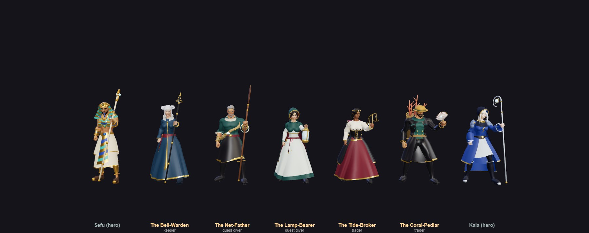
From the front
The Bell-WardenKeeper (all ten floors, the main quest)She rings the harbour bell that calls the drowned ships home.
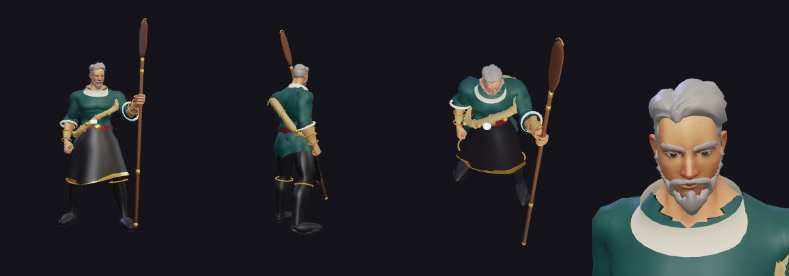
The Net-FatherQuest giver at the campThe old fisher who mends the nets that hold the sea back from the town.
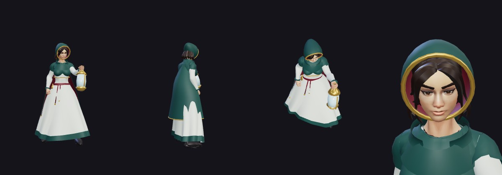
The Lamp-BearerQuest giver out in the landShe keeps the shore lamps that tell the boats where the land begins.The Tide-BrokerTrader Stands on the odd floors.She weighs what the tide gives back and sells it to climbers.
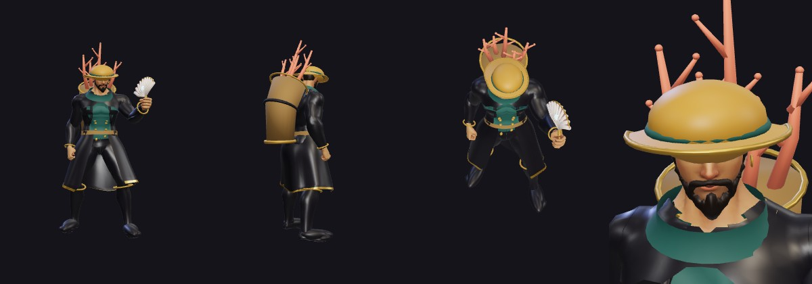
The Coral-PedlarTrader Stands on the even floors.He sells what grows on the drowned reef, and carries the reef on his back.
In the game: the camp of floor 1, the keeper's card open
The Wood floors 11 to 20 · forest and moss greens, bark brown, amber light
From the game's camera, beside the heroes Sefu and KaiaFrom the front
The Moss-AbbessKeeper (all ten floors, the main quest)She sounds the horn that keeps the walking wood asleep.The Path-LighterQuest giver at the campHe lights the spore lamps that show where the wood's paths have moved to.
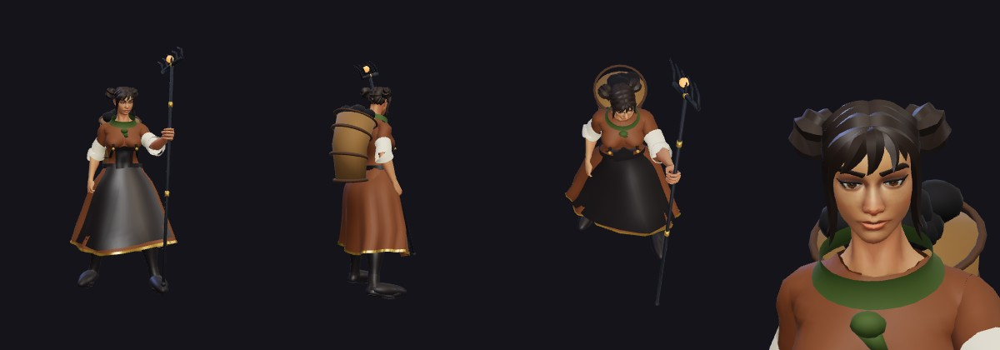
The Kiln-MotherQuest giver out in the landShe tends the charcoal stacks whose smoke keeps the hounds of the wood away.
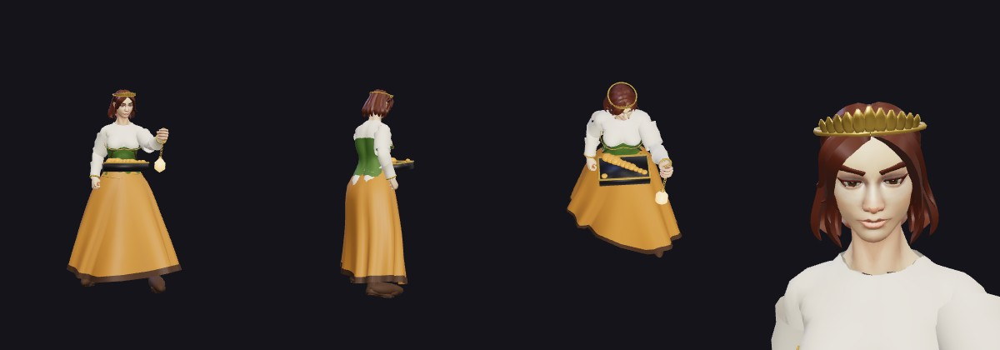
The Amber-SellerTrader Stands on the odd floors.She sells the wood's amber, the old resin with the forest's memories caught in it.The Charm-PedlarTrader Stands on the even floors.He walks the wood's moving paths with a frame of carved charms that the wood lets pass.
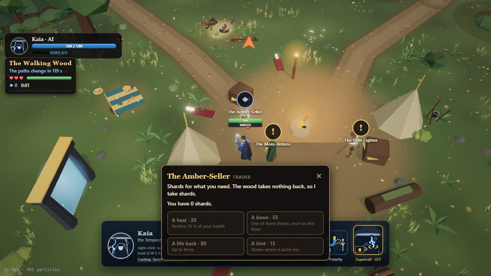
In the game: the camp of floor 11, the keeper's card open
The Sands floors 21 to 30 · night indigo, terracotta, turquoise and saffron
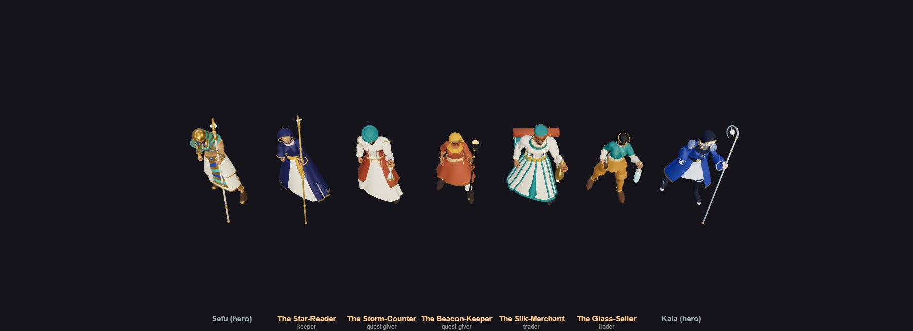
From the game's camera, beside the heroes Sefu and KaiaFrom the front
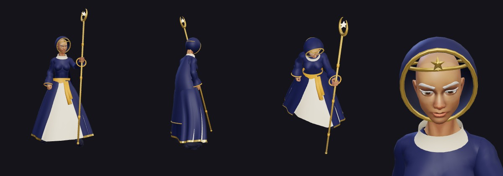
The Star-ReaderKeeper (all ten floors, the main quest)She reads in the night sky which way the storms will walk, and sends climbers by the roads they leave open.
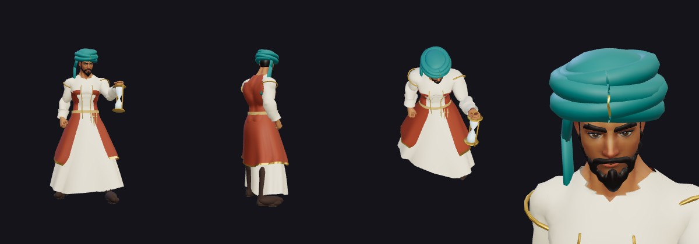
The Storm-CounterQuest giver at the campHe keeps the count of the storms, every one, by the sand that runs through his glass, and the caravans move by his word.
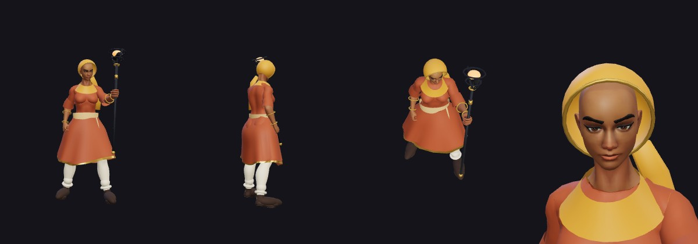
The Beacon-KeeperQuest giver out in the landShe keeps the watch fires that warn the road of a storm coming.
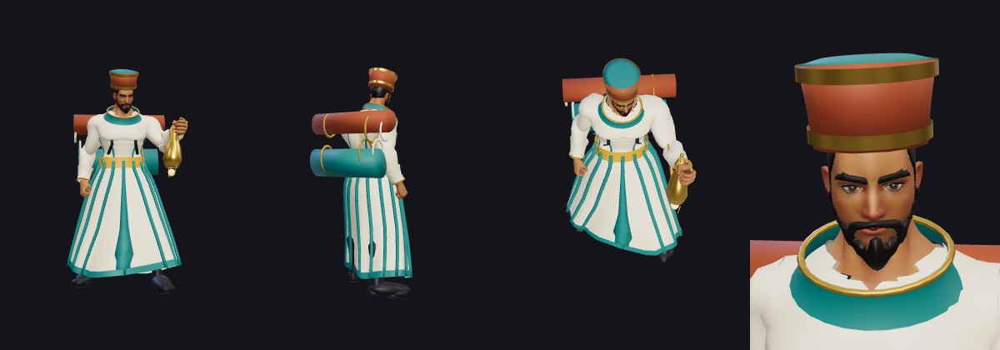
The Silk-MerchantTrader Stands on the odd floors.The master of the last caravan, who sells from its bales the road has not taken.
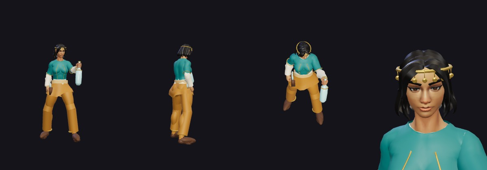
The Glass-SellerTrader Stands on the even floors.She gathers the glass the lightning leaves in the dunes and sells it by the light it still holds.
In the game: the camp of floor 21, the keeper's card open
The Deep floors 31 to 40 · slate and violet, silver, cold mint and lavender light
From the game's camera, beside the heroes Sefu and KaiaFrom the front
The Echo-HermitKeeper (all ten floors, the main quest)Blind for longer than anyone remembers, he finds the way through the dark halls by the echoes of his staff.The Candle-CrownedQuest giver at the campShe keeps the last candles of the Deep burning, and wears them, so that wherever she walks there is a little light.
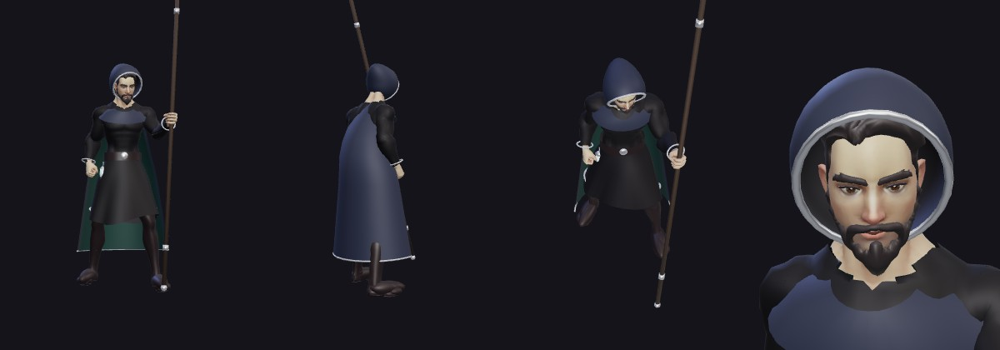
The FerrymanQuest giver out in the landHe poles the one boat across the lake under the mountain, and brings back those who went too far down.The Crystal-SellerTrader Stands on the odd floors.She cuts the Deep's crystals and sells light by the facet.The Firefly-SellerTrader Stands on the even floors.He sells living light, the fireflies of the deep caves, by the jar.
In the game: the camp of floor 31, the keeper's card open
The War floors 41 to 50 · the two banners' crimson and azure, iron grey, white
From the game's camera, beside the heroes Sefu and Kaia
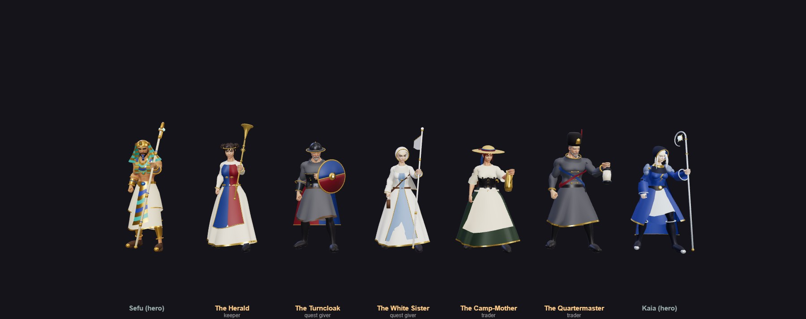
From the front
The HeraldKeeper (all ten floors, the main quest)She speaks for both armies, the only voice either side still lets cross the field.The TurncloakQuest giver at the campHe fought for both banners, one after the other, and now keeps his head down between them.
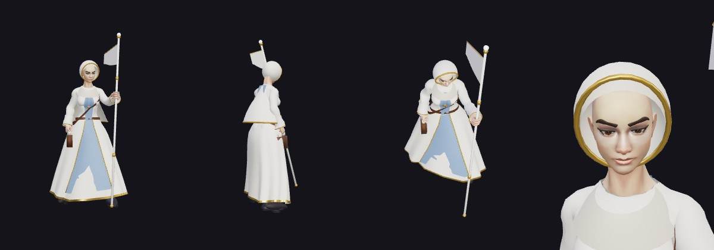
The White SisterQuest giver out in the landShe mends whoever is carried in, whatever the colour of their banner.The Camp-MotherTrader Stands on the odd floors.She feeds both armies from one fire and takes both armies' shards.
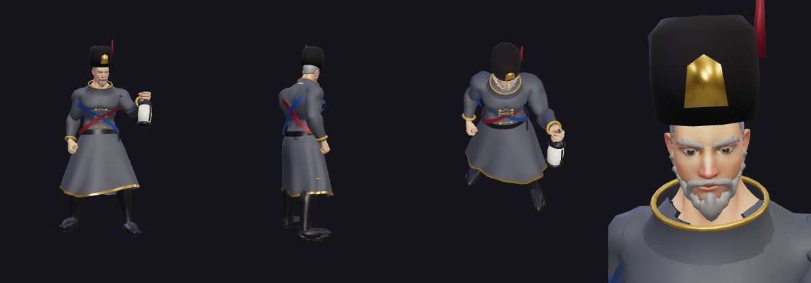
The QuartermasterTrader Stands on the even floors.He keeps the stores that both armies left behind, and opens them for shards.
In the game: the camp of floor 41, the keeper's card open
The rulers: fifteen giants, three a chapter
Each ruler stands on three floors of its chapter under that floor's own name, tint and size; the chapter's first floor has the first of them in its own colours. Built as giants, not heroes made big: broad and deep, a smaller head, big hands. The fights are the floors' own (same moves, health and timings); the model brings its look and its hit size. The crowns (floors 10, 20, 30, 40, 50) are Raid bosses. 349 to 611 KB and 13,500 to 28,800 faces each; one is loaded at a time.
The Sea floors 1 to 10
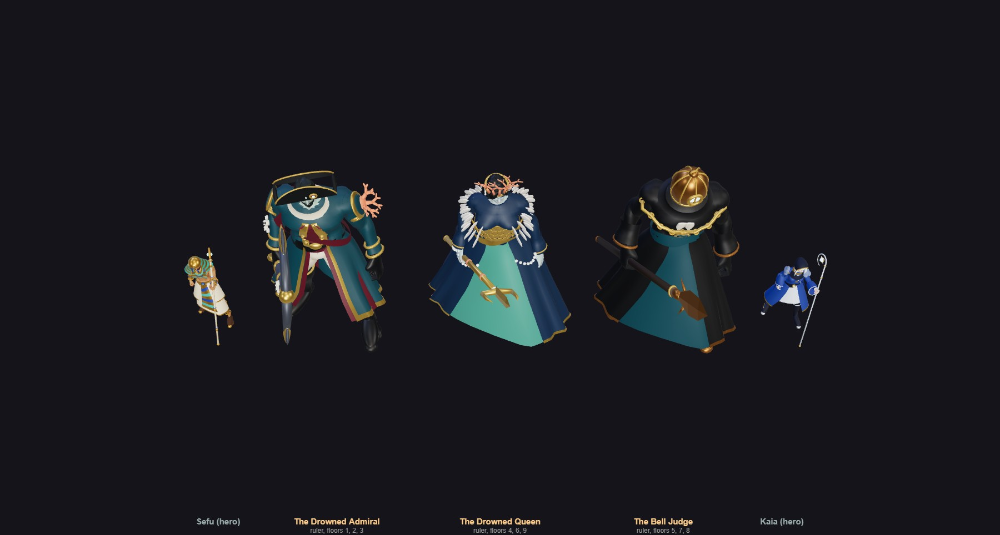
From the game's camera, beside the heroes Sefu and Kaia (rulers drawn 2.2 times a hero; the floors draw them 2.1 to 2.9)
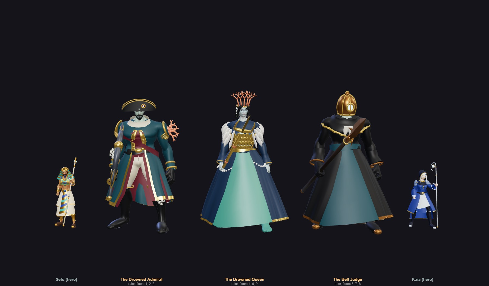
From the front
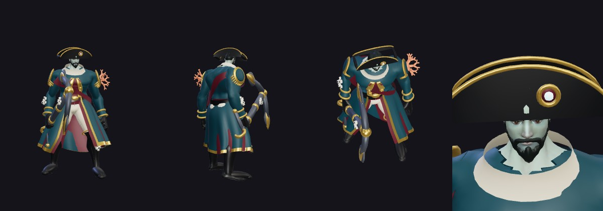
The Drowned Admiralfloors 1 (the Drowned Captain), 2, 3The Drowned Admiral (the Sea's ruler, a boss drawn about 2.2 times a hero's size): the admiral who went down with his fleet and still holds the harbour.The Drowned Queenfloors 4 (Mother of Wrecks), 6 (the Pearl Tyrant), 9 (the Gull Queen)The Drowned Queen (the Sea's second ruler, a boss drawn about 2.2 to 2.5 times a hero's size: Mother of Wrecks, the Pearl Tyrant, the Gull Queen): the queen of what the sea keeps.The Bell Judgefloors 5 (the Tide Judge), 7 (the Bell Below), 8 (the Lantern Leviathan)The Bell Judge (the Sea's third ruler, a boss drawn about 2.3 to 2.5 times a hero's size: the Tide Judge, the Bell Below, the Lantern Leviathan): the sea's own law, who sank with the court that tried the drowned.
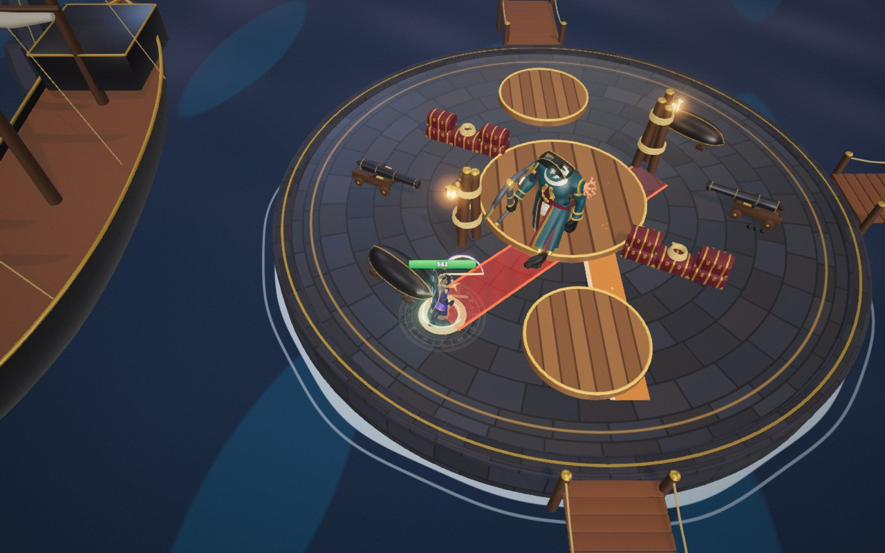
In the game: a ruler's fight
The Wood floors 11 to 20
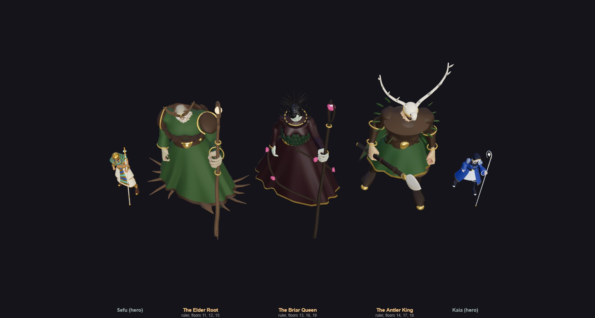
From the game's camera, beside the heroes Sefu and Kaia (rulers drawn 2.2 times a hero; the floors draw them 2.1 to 2.9)
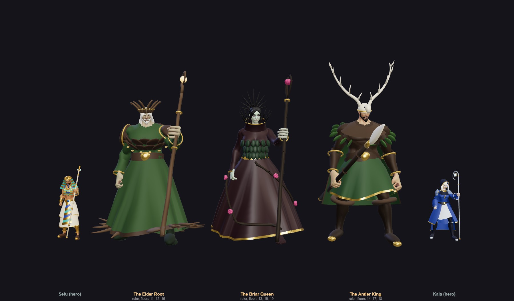
From the front
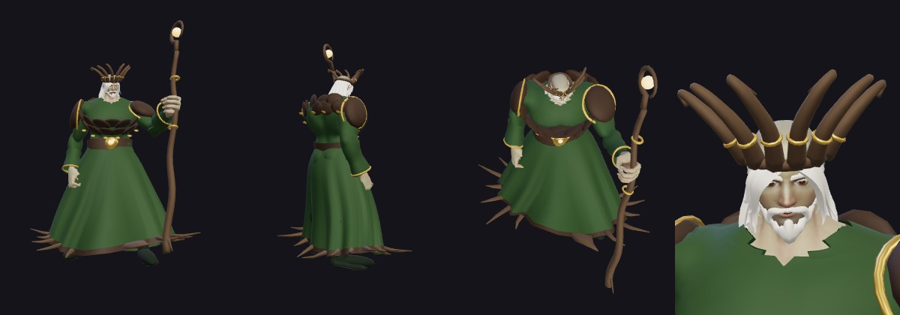
The Elder Rootfloors 11, 12 (the Moss Warden), 15 (the Hollow Elder)The Elder Root (the Wood's first ruler, a boss drawn about 2.7 times a hero's size; also the Moss Warden and the Hollow Elder): the oldest thing in the wood, the heart the roots feed.
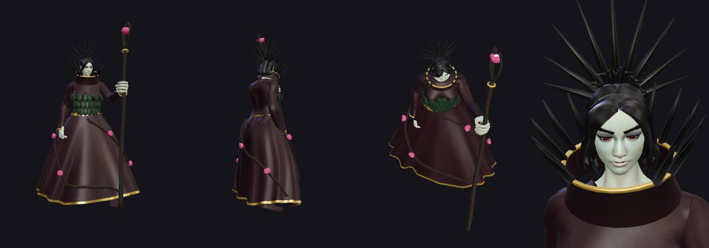
The Briar Queenfloors 13 (the Thorn Mother), 16 (the Briar Witch), 19 (the Mire Heart)The Briar Queen (the Wood's second ruler, a boss drawn about 2.6 to 2.9 times a hero's size: the Thorn Mother, the Briar Witch, the Mire Heart): the wood's thorns made a queen.The Antler Kingfloors 14, 17 (the Lantern Root), 18 (the Grey Oak)The Antler King (the Wood's third ruler, a boss drawn about 2.6 to 2.9 times a hero's size: the Antler King, the Lantern Root, the Grey Oak): the hunt's lord, who wears the great stag he slew.
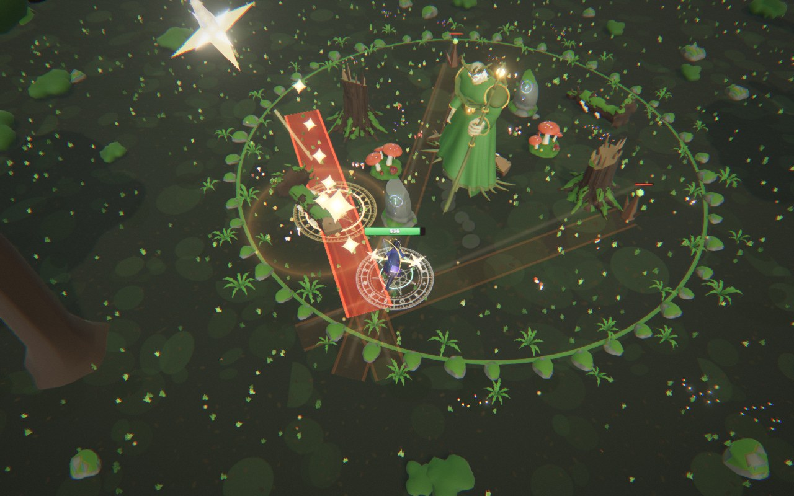
In the game: a ruler's fight
The Sands floors 21 to 30
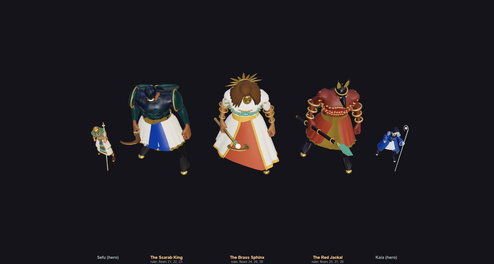
From the game's camera, beside the heroes Sefu and Kaia (rulers drawn 2.2 times a hero; the floors draw them 2.1 to 2.9)
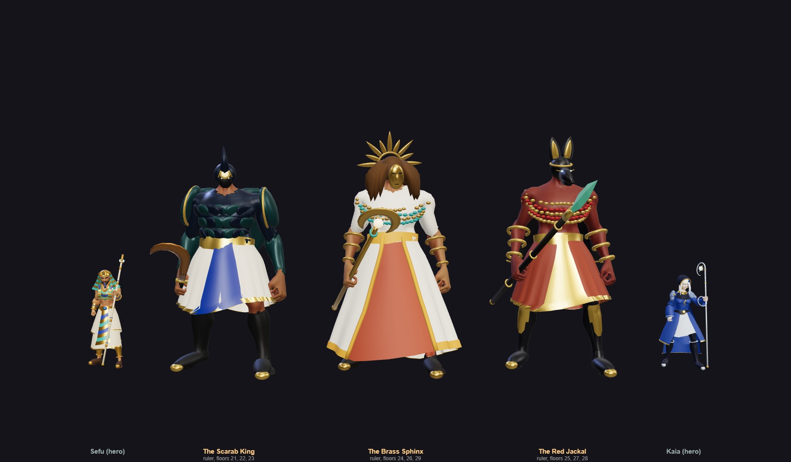
From the front
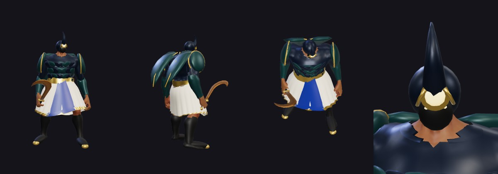
The Scarab Kingfloors 21 (the Scarab Colossus), 22, 23 (the Dune Colossus)The Scarab King (the Sands' first ruler, a boss drawn about 2.5 times a hero's size: the Scarab Colossus, the Scarab King, the Dune Colossus): the beetle-god's champion, armoured in his god's shell.The Brass Sphinxfloors 24, 26 (the Mirage Lord), 29 (the Sun-Eater)The Brass Sphinx (the Sands' second ruler, a boss drawn about 2.4 to 2.7 times a hero's size: the Brass Sphinx, the Mirage Lord, the Sun-Eater): the riddle-keeper of the wadi, a lion that stands as a man.The Red Jackalfloors 25 (the Glass Serpent), 27 (the Sand Tyrant), 28The Red Jackal (the Sands' third ruler, a boss drawn about 2.4 to 2.6 times a hero's size: the Glass Serpent, the Sand Tyrant, the Red Jackal): the wadi's hunter-judge with a jackal's head.
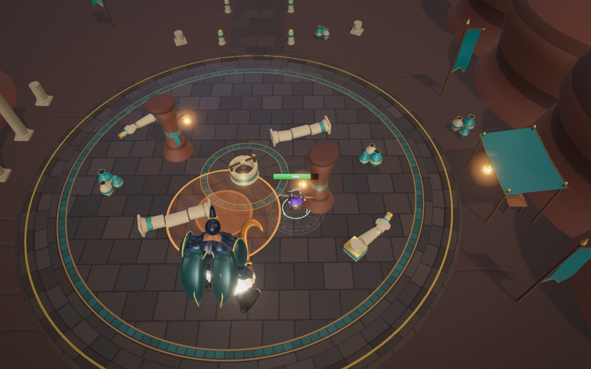
In the game: a ruler's fight
The Deep floors 31 to 40
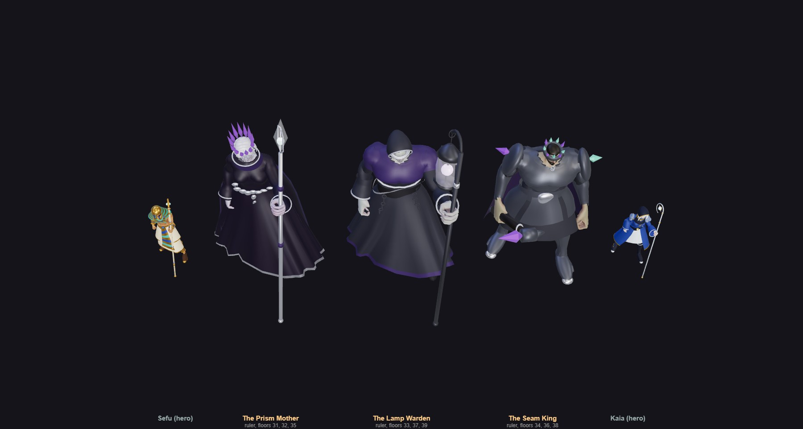
From the game's camera, beside the heroes Sefu and Kaia (rulers drawn 2.2 times a hero; the floors draw them 2.1 to 2.9)
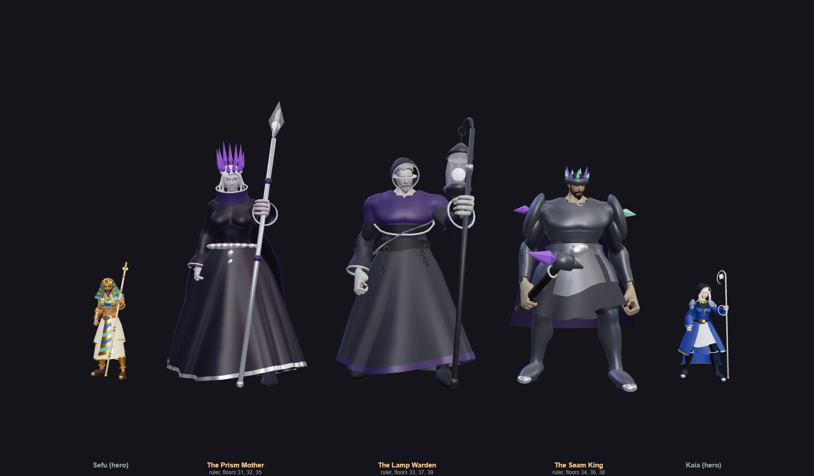
From the front
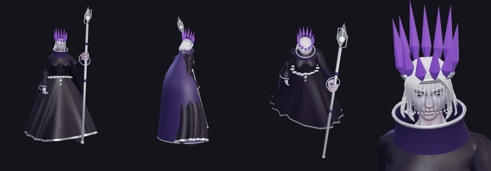
The Prism Motherfloors 31, 32 (the Hollow Queen), 35 (Mother of Echoes)The Prism Mother (the Deep's first ruler, a boss drawn about 2.5 to 2.7 times a hero's size: the Prism Mother, the Hollow Queen, Mother of Echoes): the mother of the crystals, who throws their light through the halls.
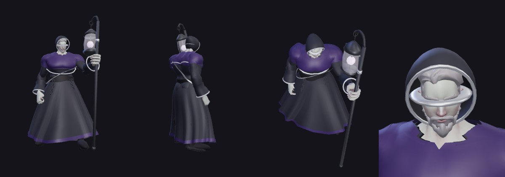
The Lamp Wardenfloors 33, 37 (the Blind Cantor), 39 (the Drowned Lantern)The Lamp Warden (the Deep's second ruler, a boss drawn about 2.5 to 2.6 times a hero's size: the Lamp Warden, the Blind Cantor, the Drowned Lantern): the blind keeper of the last great lamp, who sees by it without eyes.
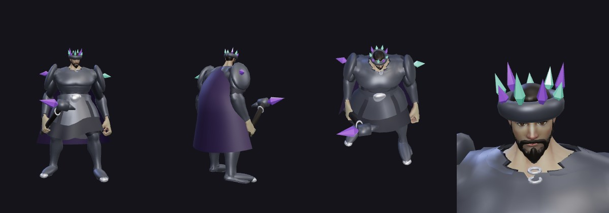
The Seam Kingfloors 34 (the Glass Abbot), 36, 38 (the Gem Tyrant)The Seam King (the Deep's third ruler, a boss drawn about 2.5 times a hero's size: the Glass Abbot, the Seam King, the Gem Tyrant): the king of the miners who dug too deep and kept what he found.
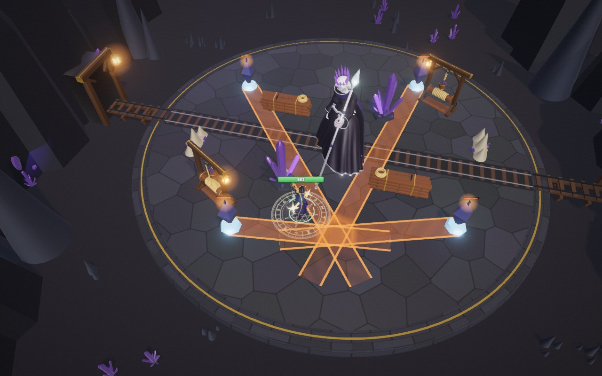
In the game: a ruler's fight
The War floors 41 to 50
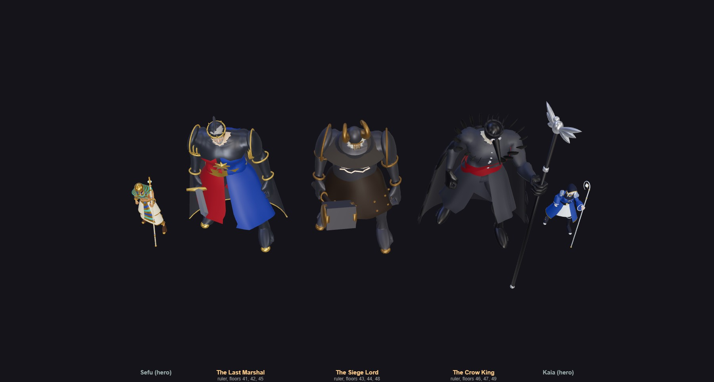
From the game's camera, beside the heroes Sefu and Kaia (rulers drawn 2.2 times a hero; the floors draw them 2.1 to 2.9)
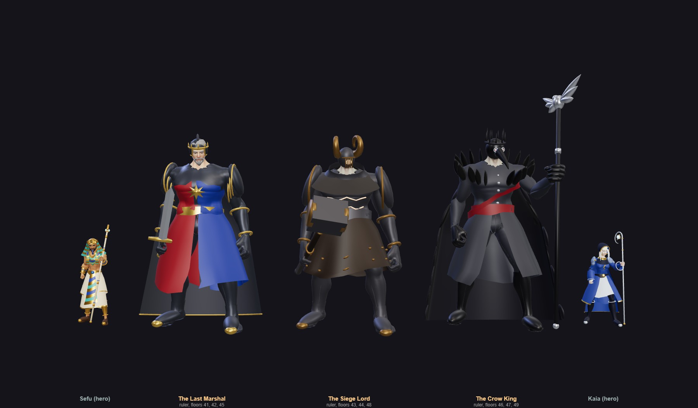
From the front
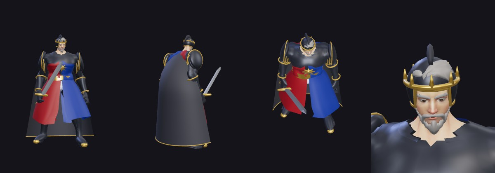
The Last Marshalfloors 41, 42 (the Iron Marshal), 45 (the Banner Knight)The Last Marshal (the War's first ruler, a boss drawn about 2.3 to 2.5 times a hero's size: the Last Marshal, the Iron Marshal, the Banner Knight): the guard of both banners, who commands both armies and serves neither.
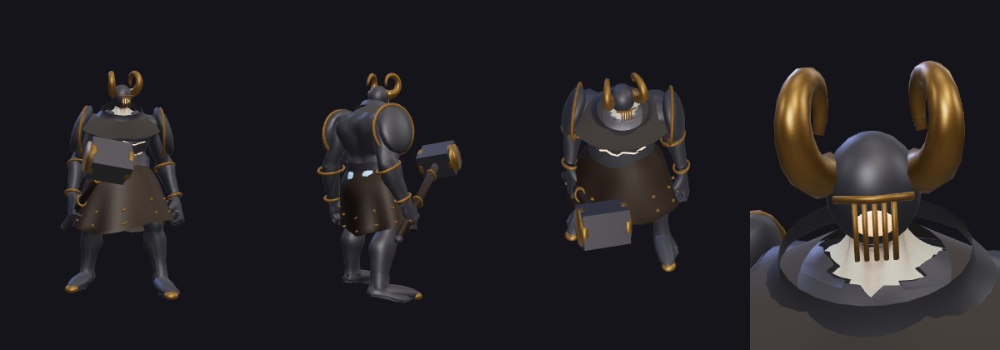
The Siege Lordfloors 43, 44 (the Ashen General), 48 (the War Drummer)The Siege Lord (the War's second ruler, a boss drawn about 2.4 to 2.5 times a hero's size: the Siege Lord, the Ashen General, the War Drummer): the breaker of walls, sooted by a hundred sieges.
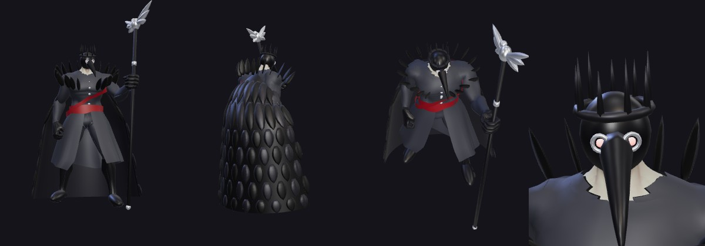
The Crow Kingfloors 46, 47 (the Black Herald), 49 (the Grey Captain)The Crow King (the War's third ruler, a boss drawn about 2.4 to 2.6 times a hero's size: the Crow King, the Black Herald, the Grey Captain): he eats what the war leaves, and the crows are his court.
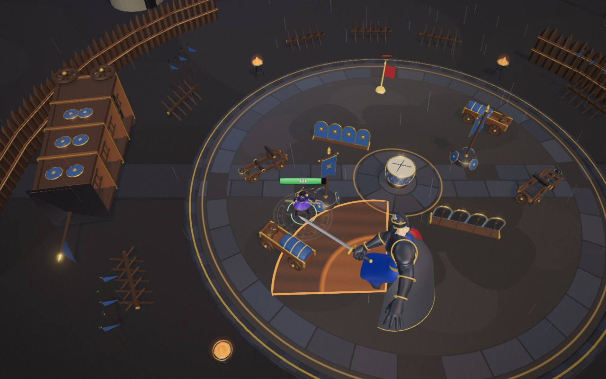
In the game: a ruler's fight
The enemies: three people-shaped kinds a chapter
The common melee one, the ranged or casting one, the big one; a named enemy shares its kind's figure under a tint, and the War's two armies share theirs in their own colours. They come in packs, so each is finished lighter: about 10,000 faces and five or six draw calls (286 to 325 KB). The beasts stay drawn in code: the brine crab, the bark hound, the stag, the shard mite, the crystal golem; so do the dust wraith (a spirit of the storm), the feeding root and the escorts. Decided here, for the user to overrule: the Wood's three are the moss giant, the thorn sprite and the Hollow Oak (its pack fighter is the hound); the Deep's are the lurker, the Lantern Thief and the Pale One (its caster is the golem).
The Sea floors 1 to 10
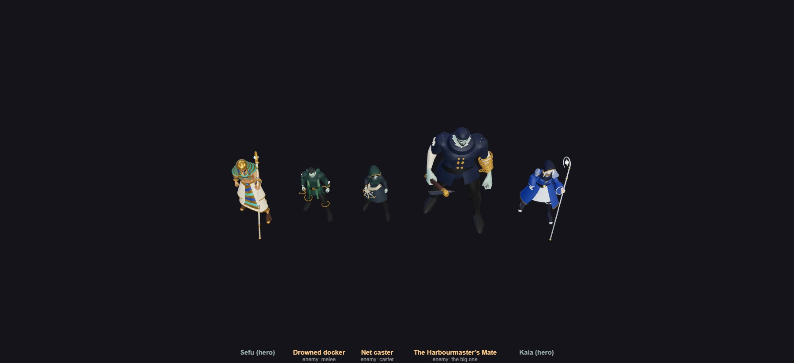
From the game's camera, beside the heroes Sefu and Kaia (each at its unit's size)
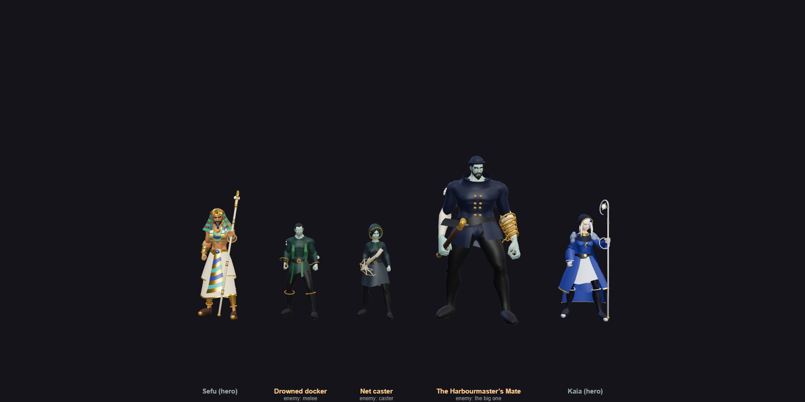
From the front
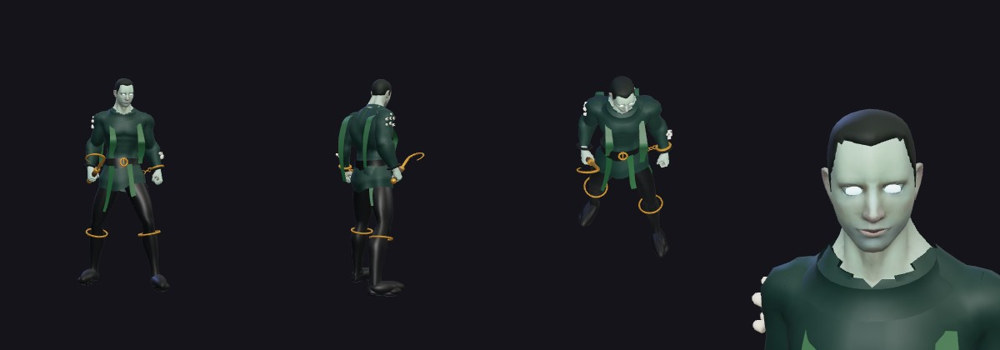
Drowned dockermeleeA dock hand the sea took back and sent up the quay again.
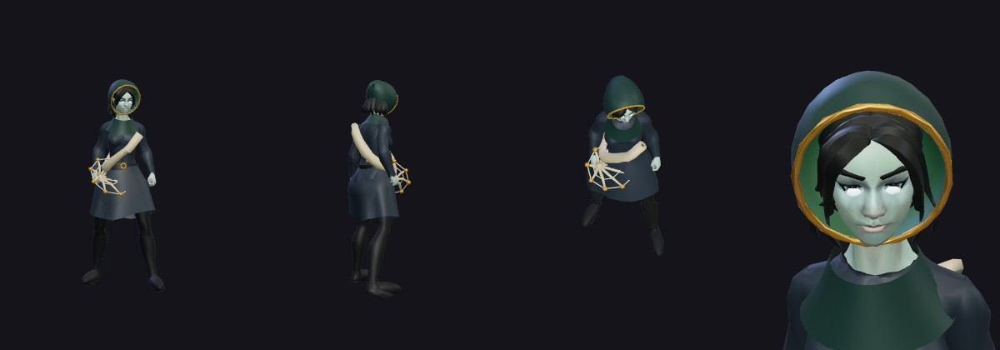
Net castercaster: its net roots you"throws a net: you are rooted a moment"): a fisherwoman the sea took and sent back.
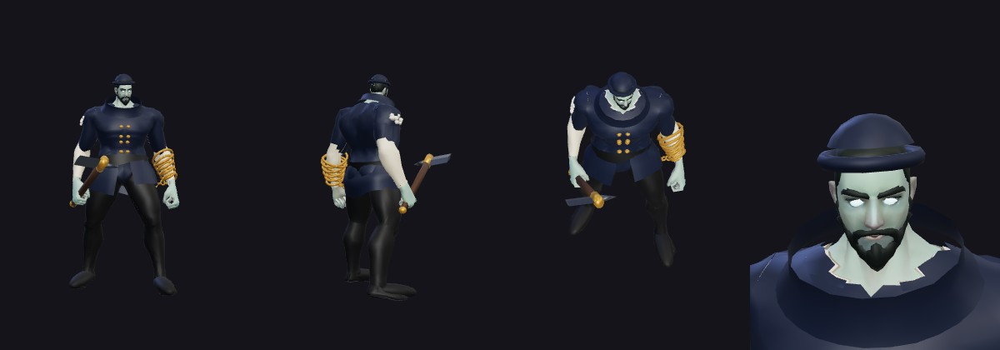
The Harbourmaster’s Matethe big one; Old Barnacle under a pale tintThe harbourmaster's right hand, drowned with him and twice the man he was.
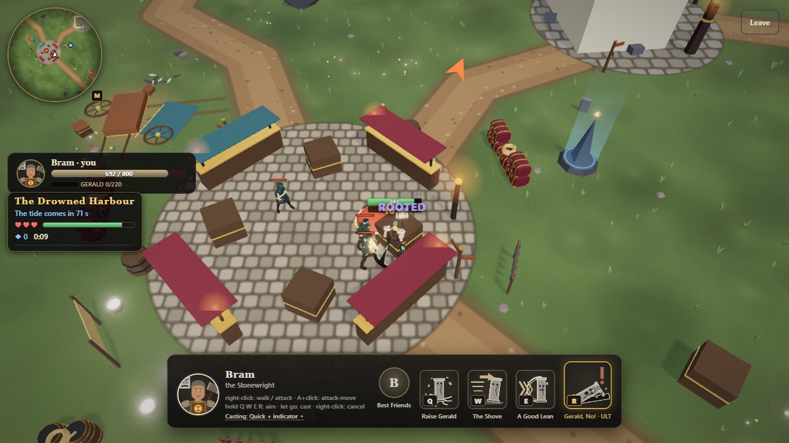
In the game: a pack fighting the hero
The Wood floors 11 to 20
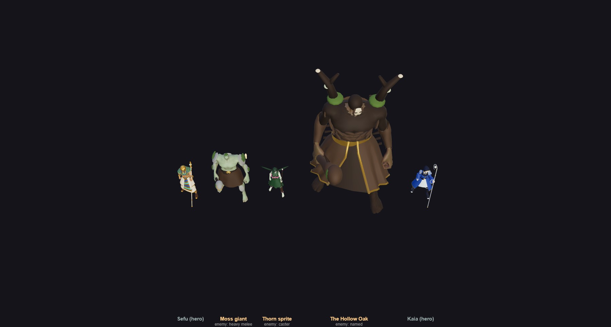
From the game's camera, beside the heroes Sefu and Kaia (each at its unit's size)
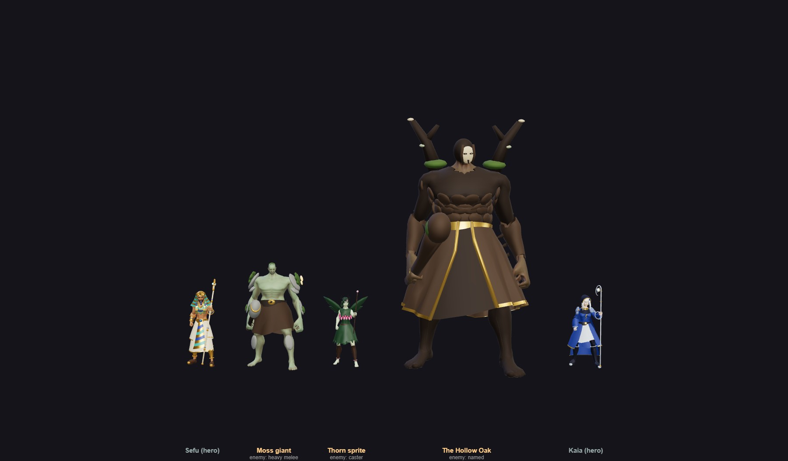
From the front
Moss giantheavy meleeA giant of the old wood that the moss has half taken back.Thorn spritecaster: throws thornsA fae of the briars, slight and quick.The Hollow Oaknamed, the big oneWalks the old road and strikes hard): a warden the wood grew round a man long ago, now more oak than man.
In the game: a pack fighting the hero
The Sands floors 21 to 30
From the game's camera, beside the heroes Sefu and Kaia (each at its unit's size)From the front
RaidermeleeA rider of the dunes without his camel, quick and lean.Slingerranged: throws stonesA raider girl of the high dunes, light and watchful.The Raider Chiefthe big one; the rider and the Dune Mother under their tintsThe warlord of the dunes.
In the game: a pack fighting the hero
The Deep floors 31 to 40
From the game's camera, beside the heroes Sefu and Kaia (each at its unit's size)From the front
Lurkermelee: leaps from the darkA hunter of the lightless halls who has not seen the sun in a lifetime.The Lantern Thiefthe big oneThe robber of the halls, broad and sure-footed, who stole the miners' last lamp.The Pale OnenamedSomething the Deep made of a king who went too far down.
In the game: a pack fighting the hero
The War floors 41 to 50
From the game's camera, beside the heroes Sefu and Kaia (each at its unit's size)From the front
Footmanmelee: crimson, azure, or ash for those of neither armyA ghost of the endless war still in the line.Bowmanranged: crimson or azureA crossbowman of the endless war.Knightthe big one: the armies’ knights; the Banner Bearer in black; the Deserter in greyA knight of the endless war, still in full plate.